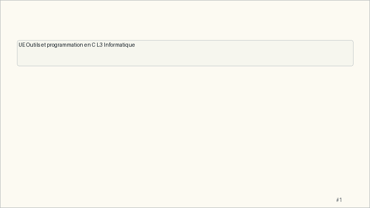

Main Path
- Start from the question: What is this course really about, and how will students be evaluated?
- Build the model: OPC is not only C syntax: it is the practice of turning text, tools, files, and memory into reliable programs.
- End with a checkable action: Students can explain the path from source file to executable and know where Unix, C, TD, and TP fit.
- Keep only this slide on the horizontal path during the live lecture.
